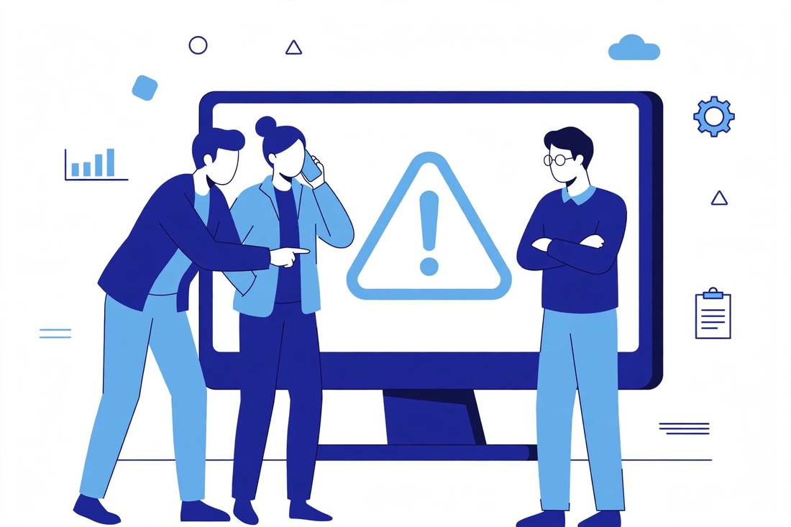
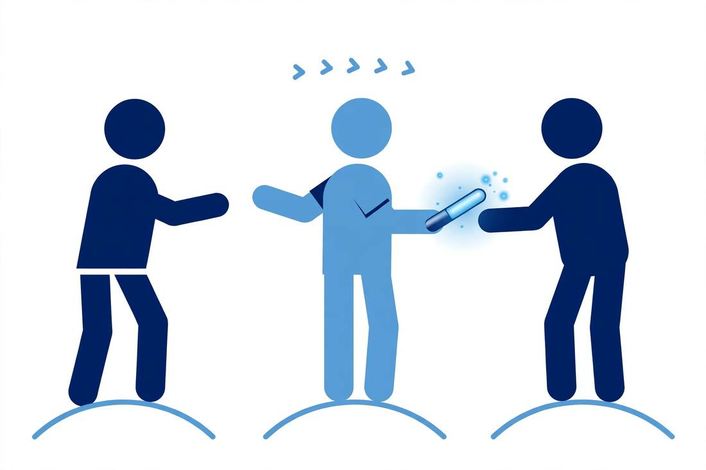

障害対応の体制づくり ― エスカレーションと役割分担の設計
2026.11.16
システムの障害は、起きてほしくないときに、予告なく起きます。 深夜のこともあれば、利用が集中する時間帯のこともあります。 そんなとき、現場でいちばん困るのは、技術的な原因そのものよりも、 「誰が何をすればいいのか分からない」という状態です。
障害対応の速さは、対応する人の技術力だけで決まるものではありません。 誰が状況を把握し、誰が判断し、誰に連絡するのか。 こうした段取りがあらかじめ決まっているかどうかで、対応の質は大きく変わります。 この記事では、障害対応の体制づくりについて、 エスカレーションと役割分担の設計という観点から整理します。

障害対応でいちばん困るのは「誰が何をするか分からない」状態
障害が起きた直後の現場では、情報が少なく、時間のプレッシャーがあります。 そんな状況で「とりあえず誰かが何とかするだろう」という状態になっていると、 いくつかの問題が起きます。
一つは、同じ調査を複数の人が重ねてしまうことです。 誰が何を調べているのか分からなければ、同じ確認が二重三重に行われ、 限られた時間が無駄に使われてしまいます。
もう一つは、判断が止まってしまうことです。 「このまま様子を見るべきか」「関係者に連絡すべきか」といった判断は、 誰が決めるのかが決まっていないと、誰も決められません。 結果として、対応の開始が遅れ、影響が広がってしまうことがあります。
さらに、連絡が行き届かないという問題もあります。 利用部門への連絡が遅れれば、利用する側は状況が分からないまま待ち続けることになります。 障害対応は技術の問題であると同時に、コミュニケーションの問題でもあるのです。
こうした混乱の多くは、障害が起きてから考えるものではありません。 起きる前から「誰が何をするか」を決めておくことで、かなりの部分を防ぐことができます。 それが、障害対応の体制づくりです。
体制づくりの出発点 ― 障害の「影響」から役割を考える
体制を設計するときの出発点は、システムの構成図ではありません。 まず考えるべきは、「このシステムが止まったら、誰が、どんなふうに困るのか」という影響です。
たとえば、利用者が直接使うシステムであれば、止まった時間そのものが影響になります。 一方で、裏側で動く処理であれば、止まってもすぐには気づかれないものの、 あとからまとめて大きな影響が出ることもあります。 影響の出方が違えば、対応の急ぎ方も、連絡すべき相手も変わってきます。
影響を整理すると、対応に必要な役割が見えてきます。 利用者への影響が大きいシステムであれば、状況を伝える連絡の役割が重要になります。 復旧に時間がかかりそうであれば、関係部署との調整や判断をする役割が必要になります。 役割は、システムの仕組みからではなく、影響の大きさと広がり方から決めるのが筋です。
このとき大切なのは、影響を一人で想像して決めないことです。 利用部門の人や、関係するチームの人に話を聞くことで、 運用側だけでは見えていなかった影響に気づくことがあります。 「止まっても大丈夫だと思っていた部分が、実は業務の要だった」という発見は、 現場の話の中にこそあります。
エスカレーションの段取り ― いつ、誰に、何を上げるか
エスカレーションとは、対応を上位の判断や別の担当へ引き上げることです。 これをうまく設計するには、「いつ」「誰に」「何を」の三つを決めておく必要があります。
まず「いつ」です。エスカレーションのタイミングが決まっていないと、 現場は「もう少し自分たちで頑張れるのではないか」と判断を先延ばしにしてしまいます。 「一定の時間が経っても原因が分からない場合」や「影響が広がりそうな場合」など、 上げる条件をあらかじめ言葉にしておくことで、迷わずに引き上げることができます。 エスカレーションは「対応の失敗」ではなく、対応の手順の一つです。 そのことを体制として示しておくことが大切です。
次に「誰に」です。連絡先が「部署の誰か」という曖昧な形では、 いざというときに連絡がつながらないことがあります。 時間帯によって連絡先が変わる場合は、夜間や休日の連絡先も含めて決めておきます。 また、連絡先の人が不在の場合の代わりも、考えておくと安心です。
そして「何を」です。エスカレーションするときに伝える内容が整理されていないと、 受け取った側は状況を把握するところから始めなければなりません。 「いつから、どのような症状が出ていて、どこまで分かっているのか」といった、 最低限の情報を決まった形で伝えられるようにしておくと、引き継ぎがスムーズになります。
エスカレーションの段取りは、一度決めたら終わりではありません。 実際に障害が起きたあと、「連絡が遅れた」「情報が足りなかった」という振り返りが出たら、 その都度見直していくものです。 段取りは、運用の中で育てていくものだと考えるとよいでしょう。

役割分担の設計 ― 指揮・調査・連絡を分ける
障害対応の現場では、やることが同時にいくつも発生します。 原因を調べること、関係者に連絡すること、対応の方針を決めること。 これらを一人が同時にこなすのは難しく、どれかがおろそかになりがちです。
そこで有効なのが、役割を分けることです。 大きく分けると、対応全体を見て判断する「指揮」の役割、 原因を調べる「調査」の役割、関係者へ状況を伝える「連絡」の役割の三つがあります。 役割を分けることで、それぞれが自分の仕事に集中でき、全体の対応が回りやすくなります。
指揮の役割は、調査の結果を聞き、次に何をするかを決めることです。 指揮をする人が調査に没頭してしまうと、全体を見る人がいなくなってしまいます。 そのため、指揮の役割は、できるだけ調査から一歩引いた立場で担うのが望ましいとされています。
連絡の役割も、軽く見てはいけません。 利用部門や関係者への連絡が遅れると、不安が広がり、問い合わせが増えて対応がさらに忙しくなります。 状況を定期的に伝える人がいることで、現場は調査に集中できますし、 利用する側も次の行動を決めやすくなります。
役割分担は、人の名前で決めるのではなく、役割として決めておくことが大切です。 担当者が変わっても、役割の枠組みが残っていれば、体制は引き継がれます。 「誰が」ではなく「どの役割を誰が担うか」という形で整理しておくと、 体制は長く使えるものになります。
体制は訓練で育てる ― 机上だけでは回らない
体制を文書にまとめても、それだけでは現場は回りません。 いざ障害が起きたときに、決めたとおりに動けるかどうかは、やってみないと分からないからです。
そのため、体制ができたら、机上の訓練で試してみることが大切です。 想定される障害のシナリオを用意し、「誰が最初に何をするか」「どこでエスカレーションするか」を、 実際に声に出して確認していきます。 訓練をやってみると、連絡先が古かったり、判断の基準が曖昧だったりと、 文書だけでは気づけなかった課題が見つかります。
訓練で見つかった課題は、体制の見直しに反映します。 訓練と見直しを繰り返すことで、体制は現場に合ったものへ育っていきます。 一度作った体制をそのままにしておくのではなく、 定期的に見直す仕組みを持つことが、体制を長持ちさせるコツです。
また、訓練は体制を覚える機会でもあります。 障害はいつ起きるか分からないため、普段から体制に触れる機会が少ない人もいます。 訓練を通じて「いざというときはこう動く」という感覚を共有しておくことで、 本番での迷いを減らすことができます。
まとめ
障害対応の体制づくりは、技術の話ではなく、段取りと役割の設計です。 障害が起きたときに「誰が何をするか分からない」状態にならないよう、 影響から役割を考え、エスカレーションの「いつ・誰に・何を」を決め、 指揮・調査・連絡の役割を分けておくこと。 そして、訓練で試して見直すことで、体制を現場に合ったものへ育てていくこと。
障害は防ぎきれるものではありませんが、混乱は減らすことができます。 体制が整っているチームは、障害が起きても慌てず、落ち着いて対応を進めることができます。 その落ち着きこそが、障害対応の体制づくりがもたらすいちばんの価値です。
このブログでは今後も、運用設計や監視の仕事について、 現場の視点から書き続けていきます。
← Blog一覧へ戻る